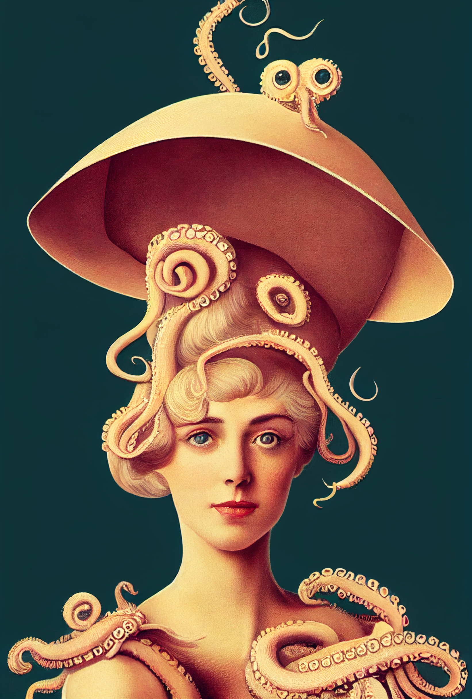

A Midjourney Showcase
Feeding back into the machine
Midjourney is an independent research lab that produces a proprietary artificial intelligence program that creates images from textual descriptions, similar to OpenAI's DALL-E and the open-source Stable Diffusion. The tool is currently in open beta, which it entered on July 12, 2022.
midjourney.com
